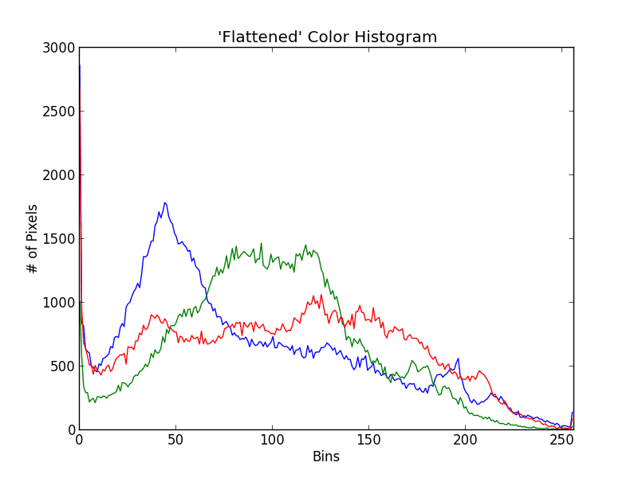
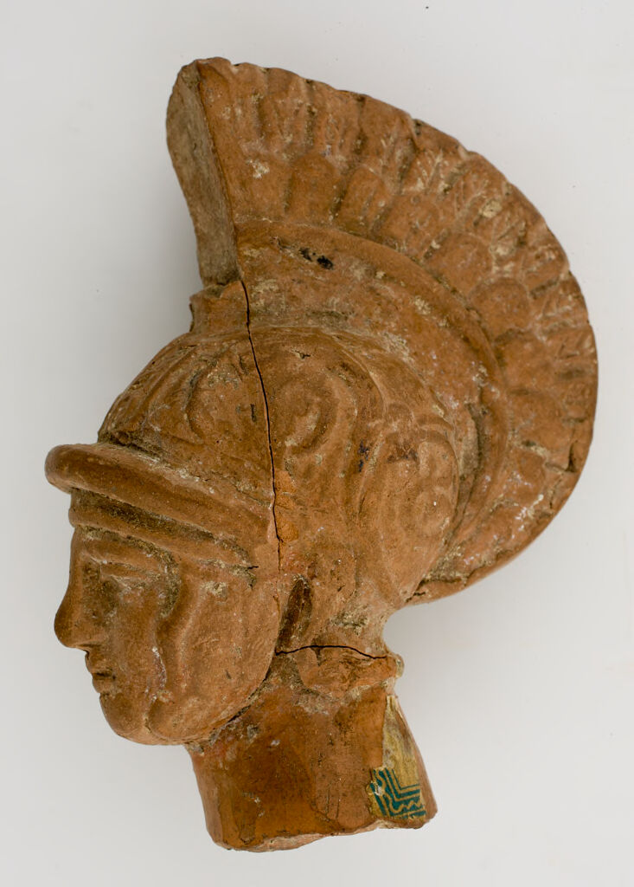
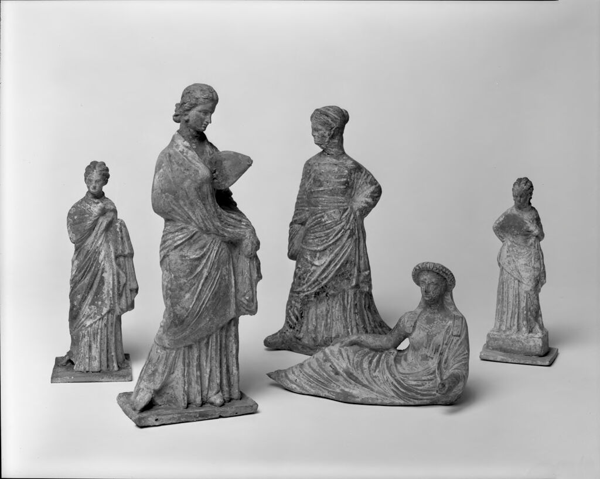
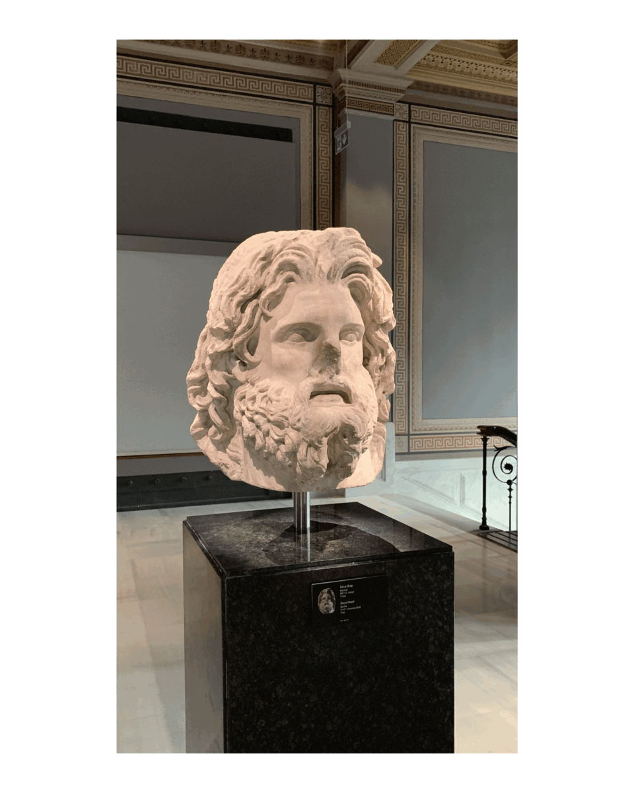
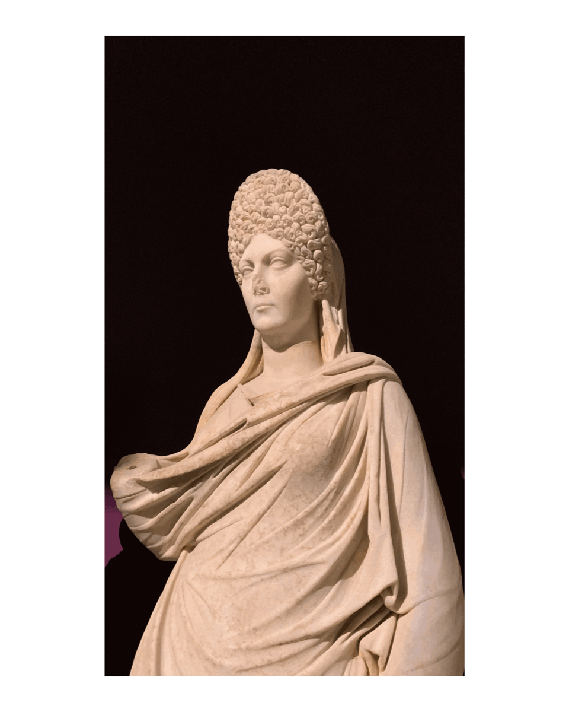

AMNE 376
Computational Studies of Greek Art and Architecture: A Machine Learning Approach
Introduction
In exploring Ancient Greek art and architecture, we often rely on established interpretations rooted in classical scholarship. However, contemporary methodologies in archaeology and art history invite us to reconsider these works through fresh perspectives. As anthropologist Clifford Geertz noted
“Cultural analysis is not about finding universal truths, but about appreciating the diversity and complexity of human experience.”
New approaches encourage us to delve into the nuanced contexts and varied meanings that classical artworks may embody.
By integrating modern analytical techniques, we can uncover layers of significance in Greek art that traditional methods might overlook. This course will employ such interdisciplinary strategies to deepen our understanding of ancient works, revealing the dynamic interplay between form, function, and cultural expression in classical antiquity.
Notebook 1: Introduction to CNN and Image Embedding
Learning Outcomes: Through this class, students will
- understand how computers process visual input
- understand convolutional neural networks (CNNs) and how they extract abstract features from images
- understand the basic forms of image embedding through visual representation and their applications
- practice basic image embedding techniques using a dataset of Greek artworks
- discuss the differences between how computers understand art and how humans understand art, and whether this cognitive model is useful in art history research.
Class Structure
- Dataset: We will provide students with an image dataset with Greek artworks of different categories, downloaded from Harvard Art Museum Collections.
- Provided computational resources permit, we will provide students with code templates and let them run the code themselves. If time permits, they can also try to embed other images they are interested in.
- We will begin by introducing the basic image loading and the traditional image representations through color histograms to demonstrate the basic concepts of image features to students.
- For image embedding task, the notebook will use DINO v2 base patch model, and focus solely on its applications instead of its principles, the key ideas will all be presented through visualizations (scatterplots, histograms and the image itself).
- We will refer to ideas from the book Computational Formalism: Art History and Machine Learning by Amanda Wasielewski to demonstrate some interesting applications of machine learning in visual art studies.
- We will briefly introduce the key applications here and elaborate on them in subsequent notes, including similarity analysis, cluster analysis, and classification analysis.
Key Features
- Basic, Practical and Generalizable Concepts in Multi-fields


- Connecting to Cutting-edge Research
Wasielewski, A. (2023). Computational Formalism: Art History and Machine Learning. The MIT Press. https://doi.org/10.7551/mitpress/14268.001.0001
Wang, J. Z., & Adams, R. B., Jr. (Eds.). (2024). Modeling visual aesthetics, emotion, and artistic style. Springer. https://doi.org/10.1007/978-3-031-50269-9
Notebook 2: Introduction to Computational Formalism
Learning Outcomes: Through this class, students will
- understand the concept of formalism in the context of art studies
- understand the basic techniques of computational formalism and describe how it differ from “traditional” formalism
- explore an example of Greek artifacts, applying the methodology and interpret the result
- critically analyze the pros and cons of formalism and computational formalism, and explain how to integrate these techniques with archaeology.
Class Structure
- Dataset: We will provide students with a dataset of images of ancient Greek sculptures from the Harvard Art Museums, covering different periods (from the 18th century BCE to the 4th century BCE), accompanied by metadata containing relevant information of these sculptures for students to explore.
- We will first create the image embedding of this dataset using DINO v2 base patch model, and cluster the images to see if any interesting patterns are observed. Here we would also introduce the concept of Bag of Visual Words that we create based on clustering.
- We will then show how we can discover the principal component of the embeddings representing the century or genre of sculptures through image classification.
- Then based on the created embeddings, we will demonstrate how we can summarize the extracted Bag of Visual Words into human-readable language using large language models.
Key Features
- Continuation of the Previous Topic with a Practical Example


Source: Harvard Art Museum
- Supplement to the Course’s Original Context-based Classical Art Research Methods.
Drawing from the analysis of machine learning in art history described in this book, one might begin to reimagine “digital” art history outside of the technology-specific paradigm in which it has been placed.
-- Computational Formalism: Art History and Machine LearningNotebook 3: Introduction to AI Assisted Restoration of Archaeological Objects
Learning Outcomes: Through this class, students will
- understand the principles of AI restoration and reconstruction of images (image generating and inpainting)
- understand how we train and verify the accuracy of AI restoration models
- understand how we can extend the knowledge of 2D image processing to 3D
- explore a dataset of vessel and coin fragments, and apply a pre-trained generative AI model to reconstruct the objects if computational resources permit
- discuss the underlying risk and bias in using AI for archaeological restoration
Class Structure
- Dataset: We will provide students with an image dataset of Greek vessels and coin fragments, as well as complete objects that have been intentionally obscured for verification purposes.
- We will introduce the concept of image inpainting and generative models (such as diffusion models or GANs) for reconstructing missing parts of archaeological objects.
- Students will observe how a pre-trained generative AI model can reconstruct missing sections of an artifact from its fragment image, and compare the AI-generated reconstruction with the original complete object.
- If computational resources allow, students can experiment with reconstructing different fragments or adjusting model parameters to see how the results change.
- We will also discuss the limitations and ethical considerations of AI-based reconstructions in archaeology, including accuracy, authenticity, and interpretive risks.
Key Features
- A More Visually Vivid and Interesting Case

Source: Stoean et al (2024)
- Introduction to a Future Trend in Archaeological Restoration


- A Practical Approach to the Application of Knowledge Accumulation and Archaeological Ethics
Reference
- Pinecone: Embedding Methods for Image Search
- Wasielewski, A. (2023). Computational Formalism: Art History and Machine Learning. The MIT Press. https://doi.org/10.7551/mitpress/14268.001.0001
- Wang, J. Z., & Adams, R. B., Jr. (Eds.). (2024). Modeling Visual Aesthetics, Emotion, and Artistic Style. Cham, Switzerland: Springer Nature. https://doi.org/10.1007/978-3-031-50269-9
- Stoean, R., Bacanin, N., Stoean, C., & Ionescu, L. (2024). Bridging the past and present: AI-driven 3D restoration of degraded artefacts for museum digital display. Journal of Cultural Heritage, 69, 18-26. https://doi.org/10.1016/j.culher.2024.07.008
- Cardarelli, L. (2024). From fragments to digital wholeness: An AI generative approach to reconstructing archaeological vessels. Journal of Cultural Heritage, 70, 250-258. https://doi.org/10.1016/j.culher.2024.09.012